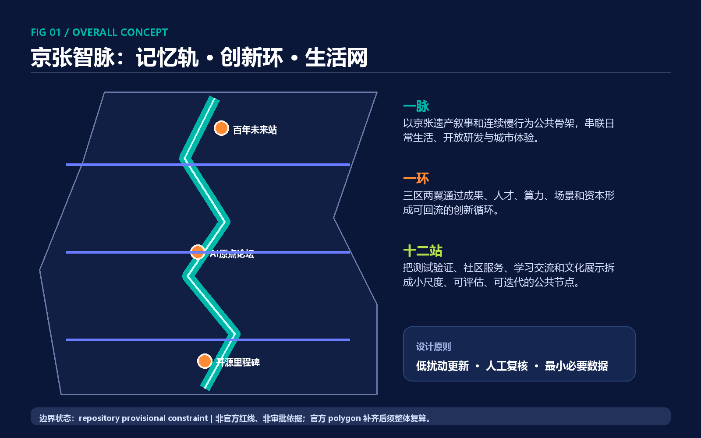
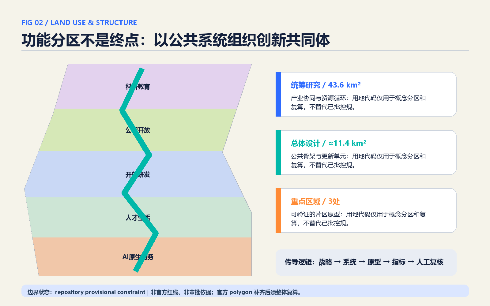
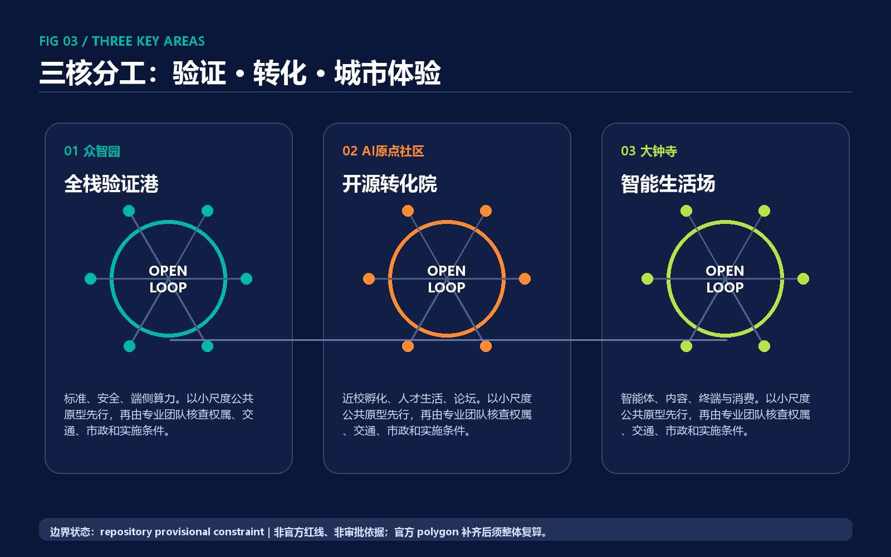
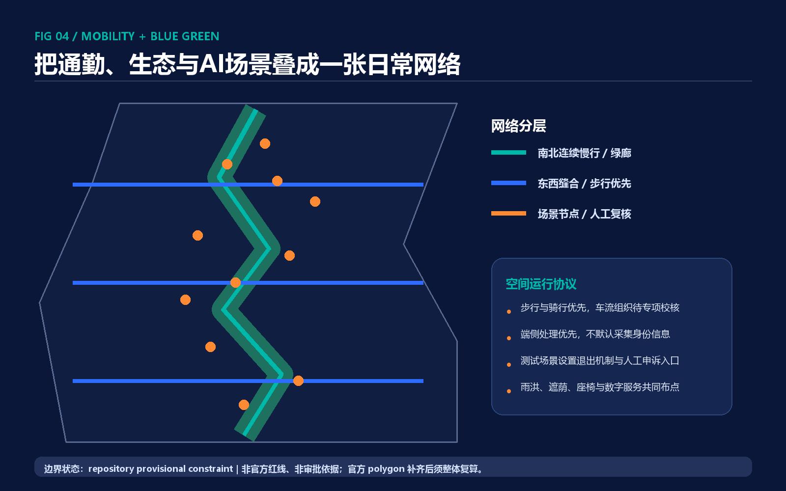
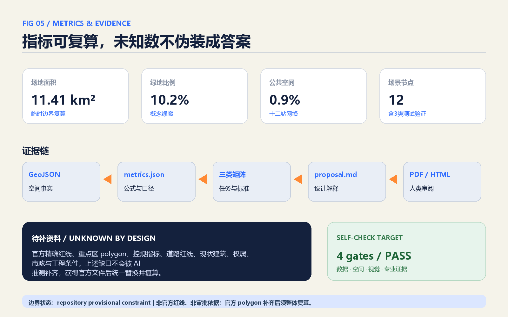

京张智脉：可生长的AI公共创新共同体
以‘记忆轨—创新环—生活网’重组百年京张沿线：三核分工、十二个可审计AI场景站和一套低扰动更新协议，把AI创新转化为可步行、可参与、可复算的城市日常。
京张智脉：可生长的AI公共创新共同体
> JINGZHANG AI COMMONS — Memory as Infrastructure, Intelligence as a Public Good.
本方案不是把 AI 贴到传统园区上的技术装饰，而是提出一套可由专业团队继续深化的“公共创新共同体”协议：以京张铁路历史脉络承载共同记忆，以三区两翼组织创新要素回流，以十二个小尺度公共节点验证 AI 服务，并用结构化空间数据和人工复核让每项判断可以追踪、质疑和修正。所有空间落地内容均为概念建议、参考方案或可供专业团队深化研究的材料，不替代法定规划，不构成政府审定、投资、招商或实施承诺。

设计依据与资料清单
依据分四层。第一层是项目公告，用于确认项目名称、三层工作范围、三个重点区、任务目标和约 43.6 km²、11.4 km²、368.4 ha 等文字面积，不用于推定精确红线。[source:OFFICIAL-ANNOUNCEMENT] [standard:PROJECT-OFFICIAL-ANNOUNCEMENT] 第二层是面向智能体的清权任务书，用于落实三大定位、五大功能、六项 agent 任务、场景数量、共创原则和统一边界条款。[source:AGENT-TASKBOOK] [standard:PROJECT-AGENT-OPEN-CALL-TASKBOOK] 第三层是专业标准本地快照，用于约束城市设计、控规深度表达和用地分类术语，而不把通用标准误写成本项目已批指标。[standard:MOHURD-URBAN-DESIGN-MEASURES] [standard:MOHURD-CONTROL-DETAILED-PLANNING] [standard:MNR-LAND-USE-CLASSIFICATION-GUIDE] 建筑工程设计深度文件当前缺少官方清权版本，仅列作深化提醒。[standard:MOHURD-ARCH-DESIGN-DEPTH-2016]
第四层是仓库数据工作流。[source:SITE-PACKAGE] 提交前已阅读公开资料登记表，区分 formal-ready、background-only 与 provisional-only；处理后的事实包只是导航，不升级为权威来源。[source:SOURCE-REGISTRY] [source:PROCESSED-FACT-PACK] 本方案使用仓库维护的临时粗略总体边界与三处重点区 polygon 作为生成、自检和可视化约束。[source:BOUNDARY-SOURCE] [source:KEY-AREA-SOURCE] 它们均标记为 provisional_constraint 与 official_boundary=false，不得作为官方红线、审批、权属、精确面积或专业评分依据。[data:geometry/site_boundary.geojson#SITE-001] [data:geometry/key_areas.geojson#PROV-KEY-001]
资料缺口决定了本方案的表达边界：精确边界、已批控规、道路红线、现状建筑、权属、市政、消防、文保和工程条件均留待官方附件和专业测绘。设计深度是“把需要判断的事项、证据链和空间关系做完整”，而不是用 AI 猜出不存在的条件。[depth:existing_conditions_diagnosis] [depth:risk_missing_data]
三层范围工作框架
统筹研究范围约 43.6 km²，承担产业与知识网络研究：把高校院所、创新企业、公共服务、专业服务和两翼支撑理解为“成果—验证—资本—人才—场景—再学习”的循环，而不是单向招商清单。总体设计范围约 11.4 km²，承担空间系统设计：将京张遗址公园、慢行缝合、创新服务、人才生活和蓝绿基础设施组织成连续网络。重点区域约 368.4 ha，承担片区原型：众智园做全栈验证，AI 原点社区做近校转化，大钟寺做智能原生城市体验。[depth:three_level_scope_framework] [data:geometry/key_areas.geojson#PROV-KEY-002]
三层之间采用“战略—系统—原型—指标—反馈”传导：统筹层提出要素循环和协同议题；总体层确定一条记忆轨、一个创新环、三核与十二站的关系；重点区层用低扰动更新项目和场景卡做空间化验证；指标与使用反馈再回到下一轮规划。这样，城市设计不是一次性交图，而是版本化的公共知识。总体设计边界的复算面积来自临时 polygon，仅用于本次包内部一致性。[metric:site_area_sqm]
获得 official polygons 后，需替换 site_boundary 与 key_areas，重新裁切用地、建筑、绿地、公共空间和分期图层，复算全部面积与比例，重绘五张核心图、A3/A0 与 HTML；在此之前不使用“红线内”“法定规模”“已批准”等措辞。[depth:metrics_recalculation]

统筹研究范围产业与未来城市研究
总体概念、命名与视觉识别
主名称“京张智脉”，英文名 JINGZHANG AI COMMONS。其中“脉”同时指铁路时间脉络、蓝绿生态脉络、人才知识脉络和可追踪的数据证据链；Commons 强调 AI 基础设施、场景和知识首先服务公共利益。视觉标记以两条不封闭的轨迹构成字母 J 与开放回路：青色代表公共智能，橙色代表人的判断与文化记忆，深蓝代表可审计的基础设施。标记方向为原创几何规则，不调用企业商标、人物肖像或未清权图像；最终 Logo、字体与无障碍识别须由品牌与版权专业团队深化。[source:AGENT-TASKBOOK]
三大定位被转译为三个可操作层：百年京张文化带对应“记忆轨”，都市 AI 生活体验带对应“十二站”，AI 融合创新带对应“创新环”。五大功能则进入循环：众智园形成全栈自主创新与治理验证，AI 原点社区形成世界级创新生态，大钟寺形成智能原生业态；中关村科技服务翼提供资金、法务、标准与国际网络，小月河场景赋能翼提供城市真实问题和公共验证环境。任何企业、资金和政策均不预设为确定承诺。
六个全球案例的可转化启示
| 案例类型 | 公开可观察机制 | 对京张的转化建议 | 不直接照搬的部分 | |---|---|---|---| | Kendall Square（波士顿） | 高校—研发—创业邻近 | 原点社区设置开放转化客厅与共享仪器预约 | 土地制度与市场规模 | | Station F（巴黎） | 大型创业社群与服务集成 | 众智园建立“一个入口、多方服务”的验证港 | 单体巨构模式 | | 22@Barcelona | 旧工业区渐进更新与混合功能 | 沿线采用小单元、可逆改造和公共空间先行 | 法定指标与产权工具 | | Brainport Eindhoven | 区域供应链与公共协作 | 三区两翼用任务制连接算力、数据、场景和专业服务 | 企业名单和财政安排 | | One-North（新加坡） | 研发、生活和公共环境复合 | 把人才生活、体育、照护嵌入创新空间 | 管理体制与建设强度 | | Toronto Quayside 经验与争议 | 数字治理、隐私与退出权成为城市议题 | 场景上线前设置数据最小化、人工复核、申诉和日落条款 | 数据集中化与默认采集 |
这些案例只提供机制启示，不作为本项目空间控制或绩效事实。京张的独特性在于：一条可步行的百年交通遗产能够把高校、社区、产业和公共体验串成真实城市，而不是封闭园区。[depth:overall_spatial_structure]
总体设计范围城市更新与控规深度城市设计
总体结构为“一脉一环、三核两翼、十二站”。一脉是京张记忆轨，复合慢行、雨洪、树荫、历史叙事与场景服务；一环是创新要素的双向循环；三核对应三个重点区；两翼提供专业服务和场景验证；十二站是沿线可拆分、可关闭、可评估的公共原型。[data:geometry/roads.geojson#ROAD-001] [data:geometry/public_space.geojson#PUBLIC-001] [depth:overall_spatial_structure]
用地采用国家分类子集表达，并明确只是概念分区：南段侧重 AI 原生商务与城市服务，中南段强化人才生活与社区服务，中段承担开放研发与成果转化，中北段突出遗址公园开放空间，北段加强科研教育协同。完整分区覆盖临时边界且无空洞、无重叠，以便复算；分区功能允许在后续专业深化中混合嵌套。[data:geometry/land_use.geojson#LU-001] [depth:land_use_layout]
城市更新不先画“大拆大建”的终局，而建立四步协议：先做安全、权属和价值评估；再把建筑分为保留修缮、适应性改造、空置激活和待专业论证；优先更新首层、院落、连廊和屋顶等公共界面；最后在交通、市政和公共服务承载确认后讨论新增体量。概念建筑基底只测试空间节奏，不代表现状、不对应具体产权或拆改决定。[data:geometry/buildings.geojson#BLDG-001] [depth:retain_renovate_demolish]
法定容积率、高度、建筑密度控制值、道路红线和建设规模均未知。方案只提出形态原则：遗产与公园界面保持低扰动和连续视线；轨道接驳节点强调首层开放与短路径；研发空间采用可分可合、可改造的中性骨架；生活街区保持日照、消防、无障碍和安静界面的优先级。所有定量值待已批控规和专项论证。[metric:building_density] [metric:building_footprint_area_sqm] [depth:development_intensity_controls] [depth:height_massing_character]
重点区域详细设计

众智园AI自主创新加速区：全栈验证港
定位为从芯片、框架、模型、智能体到安全治理的“开放验证港”。概念结构是一条共享验证街、两个花园测试院、多个可预约的端侧算力与安全评测单元。近期优先做公共导视、共享会议、模型诊所和绿色测试廊，不预设新增开发规模；中期再由专业团队结合官方 polygon、现状建筑与交通容量研究适应性改造。[data:geometry/key_areas.geojson#PROV-KEY-001]
交通上以园区内部步行环和公交接驳为先，对五环相关交通只提出研究接口，不给出桥隧或线位结论。公共空间以清河文化、低碳雨洪、算法可解释展廊和开发者荣誉墙形成国际交流环境。风险包括官方边界、现状平台清单、文保水务、安防和算力能源条件缺失；所有场景上线须人工审查。
北京AI原点社区：开源转化院
定位为“从原始创新到公共价值”的近校创新街区。概念结构由原点论坛、成果转化客厅、青年夜校、国际开发者驿站和人才生活小院组成；五道口、清华东路西口等轨道联系只作为公告提出的研究方向，不画未经授权的站点工程方案。[data:geometry/key_areas.geojson#PROV-KEY-002]
更新策略以低扰动为先：修缮有使用价值的建筑，激活闲置首层和院落，建立共享会议与短租工位，新增体量留待权属、日照、消防、控规和承载研究。公共空间通过 15 分钟步行网络连接学习、社交、居住、托育与运动，让“人才吸引力”由日常服务而非地标高度表达。风险是高校边界、现状建筑和通行权数据缺失。
大钟寺AI产业聚集区：智能生活场
定位为面向公众的智能体、终端、内容与生活服务实验街区。四象限步行连通只作为需交通专项验证的问题框架：先改善路口可读性、非机动车停放、地面连续步行和公共界面，再讨论工程跨越。空间抓手包括内容实验场、无障碍共创客厅、智能生活小店与夜间公共文化。[data:geometry/key_areas.geojson#PROV-KEY-003] [depth:three_key_area_detailed_design]
建筑策略是“开放首层、共享中庭、可逆展陈、安静上部”，以真实生活问题验证产品，而不把街区变成企业展厅。数据与数字资产机制仅作为治理研究议题，不写成已批准交易安排。风险包括大钟寺站一体化条件、交通组织、现状绿地复合利用边界和企业权属资料缺失。
AI 创新生态、人才画像与 AI+ 场景
五类核心用户不是抽象“人才”：研究者需要跨机构协作与安静工作；创业团队需要低门槛验证、法务和客户发现；居民与老人需要可理解、可退出的公共服务；学生与青年开发者需要学习、展示和贡献记忆；访客与国际伙伴需要清晰导览、双语交流与可信证据。第六类是城市运行与专业人员，他们需要留痕、权限分层和人工兜底。场景设计以这些需求为起点，不以采集更多数据为目标。
| # | 场景卡 | 空间载体 | 主要用户 | 数据边界与人工复核 | 类型 | |---|---|---|---|---|---| | 01 | 模型诊所 | 众智园共享验证院 | 研究者、创业团队 | 提交者授权样本；专家签署结论 | 产业测试验证 | | 02 | 机器人开放道路测试厅 | 封闭/可控测试院 | 研发与安全人员 | 不进入公共道路；安全员随时接管 | 产业测试验证 | | 03 | 低碳算力微站 | 众智园花园节点 | 算力运营与社区 | 仅设备与能耗数据；运维人工审批 | 产业测试验证 | | 04 | 原点成果匹配器 | 成果转化客厅 | 高校团队、投资与服务机构 | 不抓取内部资料；匹配结果人工确认 | 创新服务 | | 05 | 城市智能体服务站 | 沿线公共客厅 | 居民、访客 | 匿名问答优先；政务结果以人工窗口为准 | 公共服务 | | 06 | 无障碍共创导航 | 大钟寺与慢行节点 | 老人、残障者、访客 | 本地端侧路径计算；现场人工反馈 | 公共服务 | | 07 | 青年夜校与算力吧 | 原点社区 | 学生、青年开发者 | 学习账号自愿；作品版权由作者声明 | 学习社区 | | 08 | 社区照护协作站 | 人才生活区 | 家庭、老人、社工 | 不做人脸识别；高风险建议转人工 | 社区照护 | | 09 | AI影像与内容实验场 | 大钟寺公共文化空间 | 创作者、公众 | 素材授权台账；生成内容显著标识 | 文化消费 | | 10 | 京张记忆导览 | 遗址公园沿线 | 居民、游客 | 公共史料；史实由文化专业人员审校 | 文化叙事 | | 11 | 微气候共治花园 | 绿廊节点 | 居民、园林运维 | 环境传感不采身份；养护建议人工排程 | 蓝绿治理 | | 12 | 国际开发者驿站 | 原点论坛 | 全球开发者 | 双语协作记录自愿公开；敏感内容不上链 | 国际交流 |
场景—空间—运营采用统一闸门：问题定义、数据最小化、沙盒测试、第三方与公众评议、限期试运行、人工复核、影响评估、续期或退出。十二个节点已写入公共空间图层，数量由结构化数据复算。[data:geometry/public_space.geojson#NODE-001] [metric:scenario_node_count] 每个场景都可以在不改变城市基本服务的情况下关闭，避免技术锁定；隐私、歧视、安全和知识产权事件必须进入人工申诉渠道。
用地、建筑规模与拆改留方案
五类用地分区是功能关系模型，不是控规调整建议。科研、商业、居住服务、开放空间和教育协同通过首层共享界面与记忆轨相连，避免“研发孤岛”和昼夜单一功能。各 land_use_code 来自仓库登记的国家用地分类子集；正式深化需用完整分类表并与已批控规核对。[data:geometry/land_use.geojson#LU-003]
概念建筑基底用于验证“沿公共空间形成可进入首层、内部保持安静研发”的形态关系。建筑基底面积和密度可复算，但没有层数和总建筑面积，因此不得反推开发强度；总建筑面积与容积率明确为 unknown。[metric:total_floor_area_sqm] [metric:floor_area_ratio] 建筑高度、体量与屋顶采取三条方向：遗产界面低扰动、轨道节点体量分段、屋顶优先用于公共活动和低碳设施研究；具体数值全部等待官方条件。
拆改留不是给具体建筑贴标签，而是建立判定表：历史、结构、使用与公共价值较高者优先保留修缮；结构可用但功能不适配者优先改造；临时、低效空间先做可逆激活；只有在权属、结构安全、碳排、公众影响和替代方案比较完成后才进入拆除论证。此流程由城市更新专业团队执行，AI 仅提供资料整理与方案比较。
交通、轨道、市政与公共服务设施
交通策略是“一条南北慢行主线、三条东西缝合支线、多个站点接驳短链”。roads.geojson 仅表达步行与骑行概念中心线，不是道路红线或工程线位。[data:geometry/roads.geojson#ROAD-002] 首要动作是连续铺装、遮荫、照明、过街可读性、非机动车秩序和无障碍；对五环、轨道站、四象限与公园断点，只提出专项研究清单。道路面积因缺少官方红线保持 unknown。[metric:road_area_sqm] [depth:traffic_rail_slow_parking]
公共服务按“共享设施—专业设施—城市兜底”三级组织：十二站提供问询、学习、照护与文化体验；三个重点区配置验证、转化和国际交流的专业平台；既有教育、医疗、应急和政务体系保持最终责任。AI 服务不能替代医生、律师、规划师、社工和公共决策者。
市政与新基建采用“先测承载、后谈部署”。端侧算力微站、分布式能源、传感设备和机器人充换电都要通过能源负荷、消防、噪声、热环境、网络安全与生命周期碳排评估；设备默认模块化、可维护、可退出。没有容量资料时不写确定规模，不以概念图替代专项工程。[depth:municipal_new_infrastructure]

蓝绿空间、公共空间与城市风貌
“京张记忆轨”把绿地视为社会基础设施：连续树荫与雨洪空间支持日常慢行，开源里程碑与原点论坛支持创新交往，微气候花园和无障碍客厅支持全龄使用。概念绿廊和公共节点分别由 green_space 与 public_space 复算，比例是本方案内部比较值，不是法定绿地率或规划公共空间率。[data:geometry/green_space.geojson#GREEN-001] [metric:green_space_area_sqm] [metric:green_ratio] [metric:public_space_area_sqm] [metric:public_space_ratio] [depth:blue_green_public_space]
三处“AI 朝圣”组件避免巨大、炫技和排他：开源里程碑广场记录可核验的公共贡献，不按资本规模排序；AI 原点论坛以年度问题和失败案例为核心，让公众看到技术如何被质疑；百年未来站用京张时间轴连接工程史、中关村创新史与 AI 公共治理。荣誉展示允许个人与团队选择公开程度，所有文字、图像和标识均进入授权台账。
城市风貌以“温暖的技术理性”为基调：深蓝体现基础设施可信度，青色体现开放协作，橙色体现人的判断与历史温度；建筑界面强调可见的公共活动、可逆构件和细尺度遮荫。文化叙事从“铁路改变空间距离—中关村改变知识距离—AI 改变协作距离”展开，但史实、遗产边界和展示文本必须由文史与文保专业人员审校。
更新项目清单、实施政策与分期计划
项目库分三期并写入 phasing.geojson，其时间仅表示依赖顺序，不是政府确定时序。[data:geometry/phasing.geojson#PHASE-001] [depth:renewal_project_list] [depth:phasing_implementation]
| 阶段 | 概念项目 | 先决条件 | 评估方式 | |---|---|---|---| | 近期：公共原型 | 连续导视、无障碍修补、开源里程碑、模型诊所、场景伦理评审台 | 公共安全、权属许可、低成本可逆 | 步行连续性、参与多样性、投诉与退出记录 | | 中期：社区网络 | 原点论坛、青年夜校、国际开发者驿站、照护协作站、公共首层激活 | 官方边界、现状建筑、消防与运营伙伴 | 空间使用时段、跨机构协作、人工复核质量 | | 远期：区域协同 | 全栈验证港、算力微站网络、国际开放周、三区两翼任务市场 | 控规、市政、能源、网络安全与长期治理 | 公共价值、生态影响、可迁移知识与退出成本 |
长期运营采用“一年四季、一条贡献链”：春季发布城市公共问题和开放数据需求；夏季开展受控测试与公众体验；秋季举行京张 AI Commons Week，展示成功与失败；冬季发布年度公共价值、风险与碳排审计。开发者从问题认领、原型验证、公开评议进入城市或产业服务转化；居民通过场景陪审团、社区共创和申诉机制参与；国际传播使用双语开放档案。活动、资金、招商和机构安排均为建议，需另行协商审批。
政策建议不是补贴承诺，而是五类规则工具：场景沙盒与日落条款、公共采购的可解释与可退出要求、低扰动更新的临时使用许可研究、贡献署名与知识共享协议、年度独立影响评估。品牌资产沉淀在可复用的场景卡、组件库、指标口径和贡献档案，而不只是一场活动。
指标体系、面积复算与合规矩阵

指标分三类。第一类是可从当前概念 GeoJSON 复算的内部一致性指标：临时场地面积、概念建筑基底、绿地与公共空间面积及比例、场景节点数、用地和分期面积。五类概念用地面积分别对应 AI 原生商务、人才生活、开放研发、公园开放空间和科研教育协同，证据标签为 [metric:land_use_05_area_sqm] [metric:land_use_0702_area_sqm] [metric:land_use_0802_area_sqm] [metric:land_use_1401_area_sqm] [metric:land_use_0804_area_sqm]。三期面积用于检查概念阶段是否完整覆盖临时边界，证据标签为 [metric:phase_1_area_sqm] [metric:phase_2_area_sqm] [metric:phase_3_area_sqm]，不代表政府确定的建设时序。第二类是官方文本事实，如三层范围和三处重点区公告面积，只用于任务对照。第三类是必须保持 unknown 的法定与工程指标，包括总建筑面积、容积率、建筑高度、道路面积、市政容量与投资。[depth:metrics_recalculation]
绿地比例说明记忆轨在概念结构中的空间权重，公共空间比例说明十二站与交往节点的覆盖，建筑基底密度只用于比较公共空间与体量关系；它们都不能替代审批口径。三处重点区数量可核验，但其 polygon 是临时约束。[metric:key_area_count] 所有已知指标都记录公式、源文件、置信度和假设；HTML 使用 data-metric 与 data-value 与 metrics.json 对齐。
合规矩阵覆盖公告 1.3、1.4、1.5 和 agent.1—agent.6；标准矩阵覆盖五项 mandatory 本地标准并把缺失的建筑深度文件标记为 data gap；设计深度矩阵覆盖现状诊断、三层范围、总体结构、用地、强度待确认、建筑风貌、拆改留、交通、市政、蓝绿、三重点区、项目、分期、指标和风险。图纸和网页只做解释，权威顺序仍以 GeoJSON、metrics 和矩阵为先。
风险、版权与合规说明
最大风险不是“数据少”，而是把粗略资料说得过于确定。本方案显著披露 provisional boundary，禁止把文字四至、OSM、新闻图、截图或 AI 推测升级为 official constraint。constraints.geojson 当前保留为空的资料缺口容器，不伪造尚未取得的法定控制线；官方约束到位后应在该文件中逐项登记来源、坐标系和适用范围。[data:geometry/constraints.geojson#documented-data-gaps] 官方 polygon 到位后须替换并全量复算；已批控规、权属、现状建筑、道路、市政、消防、文保和工程条件到位前，所有相关结论只作为问题框架和概念建议。[depth:risk_missing_data]
所有图形由本提交基于仓库公开/清权资料和自主生成的结构化几何绘制，不使用远程底图、商业地图瓦片、企业 Logo、人物肖像或未清权照片。视觉标记与文字为原创方向稿；正式品牌、字体和历史图像需另做版权审查。详见 report/copyright_statement.md。
AI 场景遵守最小必要数据、目的限定、透明告知、自愿参与、人工复核、申诉与退出、限期运行和影响评估。公共服务必须保留非数字通道；高风险医疗、法律、就业、教育和安全判断不得由模型单独作出。最终判断由人类评审者、规划建筑专业团队、政府法定程序与公众参与共同完成。
参考资料
- [source:SITE-PACKAGE]
brief/site-package/ - [source:SOURCE-REGISTRY]
data/source_registry.json - [source:PROCESSED-FACT-PACK]
data/processed/agent_fact_pack.md - [source:OFFICIAL-ANNOUNCEMENT] 项目资格预审公告本地快照
- [source:AGENT-TASKBOOK] 面向智能体开源征集任务书摘录
- [source:BOUNDARY-SOURCE] 临时总体设计边界
- [source:KEY-AREA-SOURCE] 三处临时重点区边界